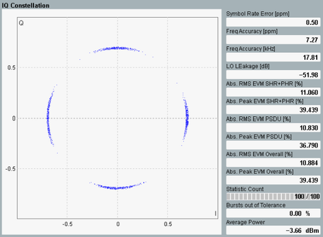

Detailed Views: I/Q Constellation Diagram
The constellation diagram shows the modulation symbols as points in the I/Q plane.

Multi-evaluation: I/Q constellation diagram
The diagram covers the PSDU portion of the burst. The I/Q constellation diagram shows the offset or the absolute symbols. Use the key combination "Display" > "Display Type" to select the type of diagram. See also: "Offset Error Vector Magnitude ".
Statistical table to the right displays modulation results covering headers, payload and complete PPDU. (See also: "PHY Protocol Data Unit (PPDU) Structure".) Only the symbols from the current measured burst are displayed. For the statistical results, refer to "Statistical Modulation Results".
See also: "I/Q Constellation Diagram"